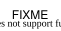
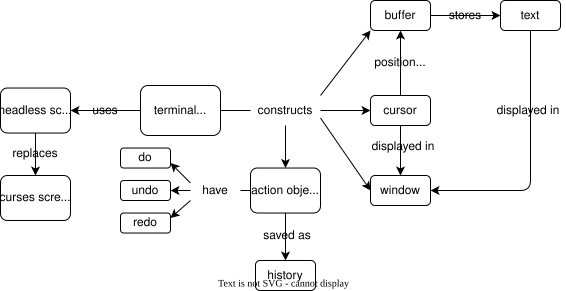

Want to change files as well as viewing them
So modify the file viewer of Chapter 23 to allow editing
And since people make mistakes when editing, implement undo
Window can draw lines and report its size
Buffer stores lines of text,
keeps track of a viewport,
and transforms buffer coordinates to screen coordinates
Cursor knows its position in the buffer
and can move up, down, left, and right
App makes a window, a buffer, and a cursor,
then maps keys to actions

Create a headless screen for testing
Store current state of display in rectangular grid
Take a list of keystrokes (for simulation)
App to have a method
that gets keystrokesclass HeadlessScreen:
def __init__(self, size, keystrokes):
self._size = size
self._keys = keystrokes
self._i_key = 0
self.erase()
def getkey(self):
if self._i_key == len(self._keys):
key = "CONTROL_X"
else:
key = self._keys[self._i_key]
self._i_key += 1
return key
def addstr(self, row, col, text):
assert 0 <= row < self._size[ROW]
assert col == 0
assert len(text) <= self._size[COL]
self._display[row] = text + self._display[row][len(text):]
HeadlessWindow to take a size
and pass it to the screenclass HeadlessWindow(Window):
def __init__(self, screen, size):
assert size is not None and len(size) == 2
super().__init__(screen, size)
class HeadlessApp(App):
def __init__(self, size, lines):
super().__init__(size, lines)
self._log = []
def get_log(self):
return self._log
def _add_log(self, key):
self._log.append((key, self._cursor.pos(), self._screen.display()))
def _make_window(self):
self._window = HeadlessWindow(self._screen, self._size)
def test_scroll_down():
size = (2, 2)
lines = ["abc", "def", "ghi"]
keys = ["KEY_DOWN"] * 3
screen = HeadlessScreen(size, keys)
app = HeadlessApp(size, lines)
app(screen)
assert app.get_log()[-1] == ("CONTROL_X", (2, 0), ["de", "gh"])
CONTROL_X (exit)class InsertDeleteBuffer(Buffer):
def insert(self, pos, char):
assert 0 <= pos[ROW] < self.nrow()
assert 0 <= pos[COL] <= self.ncol(pos[ROW])
line = self._lines[pos[ROW]]
line = line[:pos[COL]] + char + line[pos[COL]:]
self._lines[pos[ROW]] = line
def delete(self, pos):
assert 0 <= pos[ROW] < self.nrow()
assert 0 <= pos[COL] < self.ncol(pos[ROW])
line = self._lines[pos[ROW]]
line = line[:pos[COL]] + line[pos[COL] + 1:]
self._lines[pos[ROW]] = line
Delete character under the cursor, not to the left
A little defensive programming as well
class InsertDeleteApp(HeadlessApp):
INSERTABLE = set(string.ascii_letters + string.digits)
def _make_buffer(self):
self._buffer = InsertDeleteBuffer(self._lines)
def _do_DELETE(self):
self._buffer.delete(self._cursor.pos())
def _do_INSERT(self, key):
self._buffer.insert(self._cursor.pos(), key)
def _get_key(self):
key = self._screen.getkey()
if key in self.INSERTABLE:
return "INSERT", key
else:
return None, key
def _interact(self):
family, key = self._get_key()
if family is None:
name = f"_do_{key}"
if hasattr(self, name):
getattr(self, name)()
else:
name = f"_do_{family}"
if hasattr(self, name):
getattr(self, name)(key)
self._add_log(key)
_get_key to return family (generic) and key (specific)def make_fixture(keys, size, lines):
screen = HeadlessScreen(size, keys)
app = InsertDeleteApp(size, lines)
app(screen)
return app
def test_delete_middle():
app = make_fixture(["KEY_RIGHT", "DELETE"], (1, 3), ["abc"])
assert app.get_log()[-1] == ("CONTROL_X", (0, 1), ["ac_"])
def test_delete_when_impossible():
try:
make_fixture(["DELETE"], (1, 1), [""])
except AssertionError:
pass
In order to undo things we have to:
keep track of actions and reverse them, or
keep track of state and restore it
Recording actions requires less space but can be trickier to implement
Have actions append entries to a log
class HistoryApp(InsertDeleteApp):
def __init__(self, size, keystrokes):
super().__init__(size, keystrokes)
self._history = []
def get_history(self):
return self._history
def _do_DELETE(self):
row, col = self._cursor.pos()
char = self._buffer.char((row, col))
self._history.append(("delete", (row, col), char))
self._buffer.delete(self._cursor.pos())
What about undoing cursor movement?
And do we write an interpreter for these log records?
Use the Command design pattern
Each action (verb) is an object (noun) with methods to go forward and backward
Every action is derived from an abstract base class
class Action:
def __init__(self, app):
self._app = app
def do(self):
raise NotImplementedError(f"{self.__class__.__name__}: do")
def undo(self):
raise NotImplementedError(f"{self.__class__.__name__}: undo")
class Insert(Action):
def __init__(self, app, pos, char):
super().__init__(app)
self._pos = pos
self._char = char
def do(self):
self._app._buffer.insert(self._pos, self._char)
def undo(self):
self._app._buffer.delete(self._pos)
class Delete(Action):
def __init__(self, app, pos):
super().__init__(app)
self._pos = pos
self._char = self._app._buffer.char(pos)
def do(self):
self._app._buffer.delete(self._pos)
def undo(self):
self._app._buffer.insert(self._pos, self._char)
class Move(Action):
def __init__(self, app, direction):
super().__init__(app)
self._direction = direction
self._old = self._app._cursor.pos()
self._new = None
def do(self):
self._app._cursor.act(self._direction)
self._new = self._app._cursor.pos()
def undo(self):
self._app._cursor.move_to(self._old)
Cursor methods to move in a particular direction (by name)
and move to a particular location def _interact(self):
family, key = self._get_key()
name = f"_do_{family}" if family else f"_do_{key}"
if not hasattr(self, name):
return
action = getattr(self, name)(key)
self._history.append(action)
action.do()
self._add_log(key)
Create the action object
Call its .do method
Modify all action methods to take a key to simplify the code a little
def _do_DELETE(self, key):
return Delete(self, self._cursor.pos())
def _do_INSERT(self, key):
return Insert(self, self._cursor.pos(), key)
def _do_KEY_UP(self, key):
return Move(self, "up")
And it almost works!
Our first implementation of Undo creates an infinite loop
because it puts itself on the undo stack
and then does the action on the top of the stack
Modify Action to have a .save method that returns True
Override in Undo
class Undo(Action):
def do(self):
action = self._app._history.pop()
action.undo()
def save(self):
return False
def __str__(self):
return f"Undo({self._app._history[-1]})"
.save is TrueAction.post_action
to add the action to the undo stack